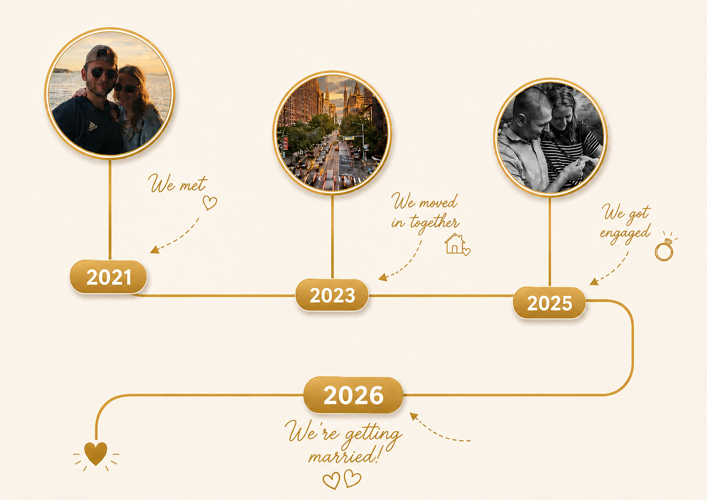

Two lives, one adventure
Where it all began
Dating during the pandemic was a challenging era. Their first date, in January of 2021, was almost canceled because of a COVID scare. As fate had it, they both tested negative and the show went on! The night began at Aiku in Morristown, and ended with them driving around doing DoorDash because they wanted to spend more time together.
They bonded over our part-time courier careers, their love for North Jersey, and their great college experiences. Joe shot his shot for date number two, which Katie accepted. A few months later, Katie moved to an apartment in New York City, where Joe began creating his own little closet. Eventually, he moved in, and the rest was history.
Over the past 5 years, they’ve become one. Whether it’s a trip out of the country, summers down the shore, or enjoying NYC’s dining scene; it’s always a memorable adventure when they’re by each other’s side.
In May 2025, while Katie was away on a trip, Joe asked for her parents’ blessing to propose one month later. Joe surprised Katie at the Trevi Fountain in Central Park where she happily said yes! That brings us to now, and they cannot wait to celebrate with all of their friends and family!
With love, Katie & Joseph
